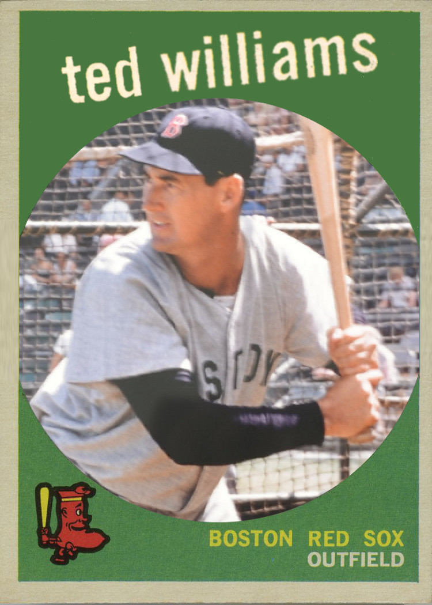
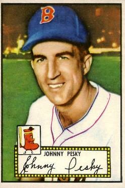
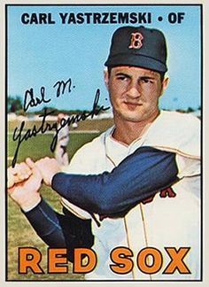

Theodore Samuel Williams (August 30, 1918 – July 5, 2002)
He played his entire 19-year Major League Baseball (MLB) career as a left fielder for the Boston Red Sox from 1939 to 1960, excepting service time during World War II and the Korean War. Nicknamed "The Kid".
John Michael Pesky (February 27, 1919 – August 13, 2012)
"Mr. Red Sox", He was a shortstop and third baseman. A left-handed hitter who threw right-handed, Pesky was a tough man for pitchers to strike out. Fenways right field post is named "the pesky pole"
Carl Michael Yastrzemski (nicknamed "Yaz" born August 22, 1939)
He was elected to the Baseball Hall of Fame in 1989.Yastrzemski played his entire 23-year baseball career with the Boston Red Sox (1961–1983). He was primarily a left fielder.